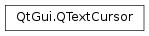

QTextCursor¶
Synopsis¶
Functions¶
- def
__eq__(rhs) - def
__ge__(rhs) - def
__gt__(rhs) - def
__le__(rhs) - def
__lt__(rhs) - def
__ne__(rhs) - def
anchor() - def
atBlockEnd() - def
atBlockStart() - def
atEnd() - def
atStart() - def
beginEditBlock() - def
block() - def
blockCharFormat() - def
blockFormat() - def
blockNumber() - def
charFormat() - def
clearSelection() - def
columnNumber() - def
createList(format) - def
createList(style) - def
currentFrame() - def
currentList() - def
currentTable() - def
deleteChar() - def
deletePreviousChar() - def
document() - def
endEditBlock() - def
hasComplexSelection() - def
hasSelection() - def
insertBlock() - def
insertBlock(format) - def
insertBlock(format, charFormat) - def
insertFragment(fragment) - def
insertFrame(format) - def
insertHtml(html) - def
insertImage(format) - def
insertImage(format, alignment) - def
insertImage(image[, name=”“]) - def
insertImage(name) - def
insertList(format) - def
insertList(style) - def
insertTable(rows, cols) - def
insertTable(rows, cols, format) - def
insertText(text) - def
insertText(text, format) - def
isCopyOf(other) - def
isNull() - def
joinPreviousEditBlock() - def
keepPositionOnInsert() - def
mergeBlockCharFormat(modifier) - def
mergeBlockFormat(modifier) - def
mergeCharFormat(modifier) - def
movePosition(op[, arg__2=MoveAnchor[, n=1]]) - def
position() - def
positionInBlock() - def
removeSelectedText() - def
select(selection) - def
selectedTableCells() - def
selectedText() - def
selection() - def
selectionEnd() - def
selectionStart() - def
setBlockCharFormat(format) - def
setBlockFormat(format) - def
setCharFormat(format) - def
setKeepPositionOnInsert(b) - def
setPosition(pos[, mode=MoveAnchor]) - def
setVerticalMovementX(x) - def
setVisualNavigation(b) - def
swap(other) - def
verticalMovementX() - def
visualNavigation()
Detailed Description¶
The
PySide2.QtGui.QTextCursorclass offers an API to access and modify QTextDocuments.Text cursors are objects that are used to access and modify the contents and underlying structure of text documents via a programming interface that mimics the behavior of a cursor in a text editor.
PySide2.QtGui.QTextCursorcontains information about both the cursor’s position within aPySide2.QtGui.QTextDocumentand any selection that it has made.
PySide2.QtGui.QTextCursoris modeled on the way a text cursor behaves in a text editor, providing a programmatic means of performing standard actions through the user interface. A document can be thought of as a single string of characters. The cursor’s currentPySide2.QtGui.QTextCursor.position()then is always either between two consecutive characters in the string, or else before the very first character or after the very last character in the string. Documents can also contain tables, lists, images, and other objects in addition to text but, from the developer’s point of view, the document can be treated as one long string. Some portions of that string can be considered to lie within particular blocks (e.g. paragraphs), or within a table’s cell, or a list’s item, or other structural elements. When we refer to “current character” we mean the character immediately before the cursorPySide2.QtGui.QTextCursor.position()in the document. Similarly, the “current block” is the block that contains the cursorPySide2.QtGui.QTextCursor.position().A
PySide2.QtGui.QTextCursoralso has anPySide2.QtGui.QTextCursor.anchor()position. The text that is between thePySide2.QtGui.QTextCursor.anchor()and thePySide2.QtGui.QTextCursor.position()is the selection. IfPySide2.QtGui.QTextCursor.anchor()==PySide2.QtGui.QTextCursor.position()there is no selection.The cursor position can be changed programmatically using
PySide2.QtGui.QTextCursor.setPosition()andPySide2.QtGui.QTextCursor.movePosition(); the latter can also be used to select text. For selections seePySide2.QtGui.QTextCursor.selectionStart(),PySide2.QtGui.QTextCursor.selectionEnd(),PySide2.QtGui.QTextCursor.hasSelection(),PySide2.QtGui.QTextCursor.clearSelection(), andPySide2.QtGui.QTextCursor.removeSelectedText().If the
PySide2.QtGui.QTextCursor.position()is at the start of a block,PySide2.QtGui.QTextCursor.atBlockStart()returnstrue; and if it is at the end of a block,PySide2.QtGui.QTextCursor.atBlockEnd()returns true. The format of the current character is returned byPySide2.QtGui.QTextCursor.charFormat(), and the format of the current block is returned byPySide2.QtGui.QTextCursor.blockFormat().Formatting can be applied to the current text document using the
PySide2.QtGui.QTextCursor.setCharFormat(),PySide2.QtGui.QTextCursor.mergeCharFormat(),PySide2.QtGui.QTextCursor.setBlockFormat()andPySide2.QtGui.QTextCursor.mergeBlockFormat()functions. The ‘set’ functions will replace the cursor’s current character or block format, while the ‘merge’ functions add the given format properties to the cursor’s current format. If the cursor has a selection, the given format is applied to the current selection. Note that when only a part of a block is selected, the block format is applied to the entire block. The text at the current character position can be turned into a list usingPySide2.QtGui.QTextCursor.createList().Deletions can be achieved using
PySide2.QtGui.QTextCursor.deleteChar(),PySide2.QtGui.QTextCursor.deletePreviousChar(), andPySide2.QtGui.QTextCursor.removeSelectedText().Text strings can be inserted into the document with the
PySide2.QtGui.QTextCursor.insertText()function, blocks (representing new paragraphs) can be inserted withPySide2.QtGui.QTextCursor.insertBlock().Existing fragments of text can be inserted with
PySide2.QtGui.QTextCursor.insertFragment()but, if you want to insert pieces of text in various formats, it is usually still easier to usePySide2.QtGui.QTextCursor.insertText()and supply a character format.Various types of higher-level structure can also be inserted into the document with the cursor:
- Lists are ordered sequences of block elements that are decorated with bullet points or symbols. These are inserted in a specified format with
PySide2.QtGui.QTextCursor.insertList().- Tables are inserted with the
PySide2.QtGui.QTextCursor.insertTable()function, and can be given an optional format. These contain an array of cells that can be traversed using the cursor.- Inline images are inserted with
PySide2.QtGui.QTextCursor.insertImage(). The image to be used can be specified in an image format, or by name.- Frames are inserted by calling
PySide2.QtGui.QTextCursor.insertFrame()with a specified format.Actions can be grouped (i.e. treated as a single action for undo/redo) using
PySide2.QtGui.QTextCursor.beginEditBlock()andPySide2.QtGui.QTextCursor.endEditBlock().Cursor movements are limited to valid cursor positions. In Latin writing this is between any two consecutive characters in the text, before the first character, or after the last character. In some other writing systems cursor movements are limited to “clusters” (e.g. a syllable in Devanagari, or a base letter plus diacritics). Functions such as
PySide2.QtGui.QTextCursor.movePosition()andPySide2.QtGui.QTextCursor.deleteChar()limit cursor movement to these valid positions.See also
-
class
PySide2.QtGui.QTextCursor¶ -
class
PySide2.QtGui.QTextCursor(document) -
class
PySide2.QtGui.QTextCursor(frame) -
class
PySide2.QtGui.QTextCursor(block) -
class
PySide2.QtGui.QTextCursor(cursor) Parameters: - document –
PySide2.QtGui.QTextDocument - cursor –
PySide2.QtGui.QTextCursor - frame –
PySide2.QtGui.QTextFrame - block –
PySide2.QtGui.QTextBlock
Constructs a null cursor.
Constructs a cursor pointing to the beginning of the
document.Constructs a cursor pointing to the beginning of the
frame.Constructs a cursor pointing to the beginning of the
block.Constructs a new cursor that is a copy of
cursor.- document –
-
PySide2.QtGui.QTextCursor.MoveMode¶ Constant Description QTextCursor.MoveAnchor Moves the anchor to the same position as the cursor itself. QTextCursor.KeepAnchor Keeps the anchor where it is. If the
PySide2.QtGui.QTextCursor.anchor()is kept where it is and thePySide2.QtGui.QTextCursor.position()is moved, the text in between will be selected.
-
PySide2.QtGui.QTextCursor.MoveOperation¶ Constant Description QTextCursor.NoMove Keep the cursor where it is QTextCursor.Start Move to the start of the document. QTextCursor.StartOfLine Move to the start of the current line. QTextCursor.StartOfBlock Move to the start of the current block. QTextCursor.StartOfWord Move to the start of the current word. QTextCursor.PreviousBlock Move to the start of the previous block. QTextCursor.PreviousCharacter Move to the previous character. QTextCursor.PreviousWord Move to the beginning of the previous word. QTextCursor.Up Move up one line. QTextCursor.Left Move left one character. QTextCursor.WordLeft Move left one word. QTextCursor.End Move to the end of the document. QTextCursor.EndOfLine Move to the end of the current line. QTextCursor.EndOfWord Move to the end of the current word. QTextCursor.EndOfBlock Move to the end of the current block. QTextCursor.NextBlock Move to the beginning of the next block. QTextCursor.NextCharacter Move to the next character. QTextCursor.NextWord Move to the next word. QTextCursor.Down Move down one line. QTextCursor.Right Move right one character. QTextCursor.WordRight Move right one word. QTextCursor.NextCell Move to the beginning of the next table cell inside the current table. If the current cell is the last cell in the row, the cursor will move to the first cell in the next row. QTextCursor.PreviousCell Move to the beginning of the previous table cell inside the current table. If the current cell is the first cell in the row, the cursor will move to the last cell in the previous row. QTextCursor.NextRow Move to the first new cell of the next row in the current table. QTextCursor.PreviousRow Move to the last cell of the previous row in the current table.
-
PySide2.QtGui.QTextCursor.SelectionType¶ This enum describes the types of selection that can be applied with the
PySide2.QtGui.QTextCursor.select()function.Constant Description QTextCursor.Document Selects the entire document. QTextCursor.BlockUnderCursor Selects the block of text under the cursor. QTextCursor.LineUnderCursor Selects the line of text under the cursor. QTextCursor.WordUnderCursor Selects the word under the cursor. If the cursor is not positioned within a string of selectable characters, no text is selected.
-
PySide2.QtGui.QTextCursor.anchor()¶ Return type: PySide2.QtCore.intReturns the anchor position; this is the same as
PySide2.QtGui.QTextCursor.position()unless there is a selection in which casePySide2.QtGui.QTextCursor.position()marks one end of the selection and marks the other end. Just like the cursor position, the anchor position is between characters.
-
PySide2.QtGui.QTextCursor.atBlockEnd()¶ Return type: PySide2.QtCore.boolReturns
trueif the cursor is at the end of a block; otherwise returnsfalse.
-
PySide2.QtGui.QTextCursor.atBlockStart()¶ Return type: PySide2.QtCore.boolReturns
trueif the cursor is at the start of a block; otherwise returnsfalse.
-
PySide2.QtGui.QTextCursor.atEnd()¶ Return type: PySide2.QtCore.boolReturns
trueif the cursor is at the end of the document; otherwise returnsfalse.
-
PySide2.QtGui.QTextCursor.atStart()¶ Return type: PySide2.QtCore.boolReturns
trueif the cursor is at the start of the document; otherwise returnsfalse.
-
PySide2.QtGui.QTextCursor.beginEditBlock()¶ Indicates the start of a block of editing operations on the document that should appear as a single operation from an undo/redo point of view.
For example:
cursor = QTextCursor(textDocument) cursor.beginEditBlock() cursor.insertText("Hello") cursor.insertText("World") cursor.endEditBlock() textDocument.undo()
The call to undo() will cause both insertions to be undone, causing both “World” and “Hello” to be removed.
It is possible to nest calls to and
PySide2.QtGui.QTextCursor.endEditBlock(). The top-most pair will determine the scope of the undo/redo operation.
-
PySide2.QtGui.QTextCursor.block()¶ Return type: PySide2.QtGui.QTextBlockReturns the block that contains the cursor.
-
PySide2.QtGui.QTextCursor.blockCharFormat()¶ Return type: PySide2.QtGui.QTextCharFormatReturns the block character format of the block the cursor is in.
The block char format is the format used when inserting text at the beginning of an empty block.
-
PySide2.QtGui.QTextCursor.blockFormat()¶ Return type: PySide2.QtGui.QTextBlockFormatReturns the block format of the block the cursor is in.
-
PySide2.QtGui.QTextCursor.blockNumber()¶ Return type: PySide2.QtCore.intReturns the number of the block the cursor is in, or 0 if the cursor is invalid.
Note that this function only makes sense in documents without complex objects such as tables or frames.
-
PySide2.QtGui.QTextCursor.charFormat()¶ Return type: PySide2.QtGui.QTextCharFormatReturns the format of the character immediately before the cursor
PySide2.QtGui.QTextCursor.position(). If the cursor is positioned at the beginning of a text block that is not empty then the format of the character immediately after the cursor is returned.
-
PySide2.QtGui.QTextCursor.clearSelection()¶ Clears the current selection by setting the anchor to the cursor position.
Note that it does not delete the text of the selection.
-
PySide2.QtGui.QTextCursor.columnNumber()¶ Return type: PySide2.QtCore.intReturns the position of the cursor within its containing line.
Note that this is the column number relative to a wrapped line, not relative to the block (i.e. the paragraph).
You probably want to call
PySide2.QtGui.QTextCursor.positionInBlock()instead.
-
PySide2.QtGui.QTextCursor.createList(format)¶ Parameters: format – PySide2.QtGui.QTextListFormatReturn type: PySide2.QtGui.QTextListCreates and returns a new list with the given
format, and makes the current paragraph the cursor is in the first list item.
-
PySide2.QtGui.QTextCursor.createList(style) Parameters: style – PySide2.QtGui.QTextListFormat.StyleReturn type: PySide2.QtGui.QTextListThis is an overloaded function.
Creates and returns a new list with the given
style, making the cursor’s current paragraph the first list item.The style to be used is defined by the
QTextListFormat.Styleenum.
-
PySide2.QtGui.QTextCursor.currentFrame()¶ Return type: PySide2.QtGui.QTextFrameReturns a pointer to the current frame. Returns 0 if the cursor is invalid.
-
PySide2.QtGui.QTextCursor.currentList()¶ Return type: PySide2.QtGui.QTextListReturns the current list if the cursor
PySide2.QtGui.QTextCursor.position()is inside a block that is part of a list; otherwise returns 0.
-
PySide2.QtGui.QTextCursor.currentTable()¶ Return type: PySide2.QtGui.QTextTableReturns a pointer to the current table if the cursor
PySide2.QtGui.QTextCursor.position()is inside a block that is part of a table; otherwise returns 0.
-
PySide2.QtGui.QTextCursor.deleteChar()¶ If there is no selected text, deletes the character at the current cursor position; otherwise deletes the selected text.
-
PySide2.QtGui.QTextCursor.deletePreviousChar()¶ If there is no selected text, deletes the character before the current cursor position; otherwise deletes the selected text.
-
PySide2.QtGui.QTextCursor.document()¶ Return type: PySide2.QtGui.QTextDocumentReturns the document this cursor is associated with.
-
PySide2.QtGui.QTextCursor.endEditBlock()¶ Indicates the end of a block of editing operations on the document that should appear as a single operation from an undo/redo point of view.
-
PySide2.QtGui.QTextCursor.hasComplexSelection()¶ Return type: PySide2.QtCore.boolReturns
trueif the cursor contains a selection that is not simply a range fromPySide2.QtGui.QTextCursor.selectionStart()toPySide2.QtGui.QTextCursor.selectionEnd(); otherwise returnsfalse.Complex selections are ones that span at least two cells in a table; their extent is specified by
PySide2.QtGui.QTextCursor.selectedTableCells().
-
PySide2.QtGui.QTextCursor.hasSelection()¶ Return type: PySide2.QtCore.boolReturns
trueif the cursor contains a selection; otherwise returnsfalse.
-
PySide2.QtGui.QTextCursor.insertBlock(format, charFormat)¶ Parameters: - format –
PySide2.QtGui.QTextBlockFormat - charFormat –
PySide2.QtGui.QTextCharFormat
This is an overloaded function.
Inserts a new empty block at the cursor
PySide2.QtGui.QTextCursor.position()with block formatformatandcharFormatas block char format.- format –
-
PySide2.QtGui.QTextCursor.insertBlock() Inserts a new empty block at the cursor
PySide2.QtGui.QTextCursor.position()with the currentPySide2.QtGui.QTextCursor.blockFormat()andPySide2.QtGui.QTextCursor.charFormat().
-
PySide2.QtGui.QTextCursor.insertBlock(format) Parameters: format – PySide2.QtGui.QTextBlockFormatThis is an overloaded function.
Inserts a new empty block at the cursor
PySide2.QtGui.QTextCursor.position()with block formatformatand the currentPySide2.QtGui.QTextCursor.charFormat()as block char format.
-
PySide2.QtGui.QTextCursor.insertFragment(fragment)¶ Parameters: fragment – PySide2.QtGui.QTextDocumentFragmentInserts the text
fragmentat the currentPySide2.QtGui.QTextCursor.position().
-
PySide2.QtGui.QTextCursor.insertFrame(format)¶ Parameters: format – PySide2.QtGui.QTextFrameFormatReturn type: PySide2.QtGui.QTextFrameInserts a frame with the given
formatat the current cursorPySide2.QtGui.QTextCursor.position(), moves the cursorPySide2.QtGui.QTextCursor.position()inside the frame, and returns the frame.If the cursor holds a selection, the whole selection is moved inside the frame.
-
PySide2.QtGui.QTextCursor.insertHtml(html)¶ Parameters: html – unicode Inserts the text
htmlat the currentPySide2.QtGui.QTextCursor.position(). The text is interpreted as HTML.Note
When using this function with a style sheet, the style sheet will only apply to the current block in the document. In order to apply a style sheet throughout a document, use
QTextDocument.setDefaultStyleSheet()instead.
-
PySide2.QtGui.QTextCursor.insertImage(format)¶ Parameters: format – PySide2.QtGui.QTextImageFormatInserts the image defined by
formatat the currentPySide2.QtGui.QTextCursor.position().
-
PySide2.QtGui.QTextCursor.insertImage(image[, name=""]) Parameters: - image –
PySide2.QtGui.QImage - name – unicode
This is an overloaded function.
Convenience function for inserting the given
imagewith an optionalnameat the currentPySide2.QtGui.QTextCursor.position().- image –
-
PySide2.QtGui.QTextCursor.insertImage(format, alignment) Parameters: - format –
PySide2.QtGui.QTextImageFormat - alignment –
PySide2.QtGui.QTextFrameFormat.Position
This is an overloaded function.
Inserts the image defined by the given
formatat the cursor’s current position with the specifiedalignment.See also
- format –
-
PySide2.QtGui.QTextCursor.insertImage(name) Parameters: name – unicode This is an overloaded function.
Convenience method for inserting the image with the given
nameat the currentPySide2.QtGui.QTextCursor.position().img = ... # A QImage textDocument.addResource(QTextDocument.ImageResource, QUrl("myimage"), img) cursor.insertImage("myimage")
-
PySide2.QtGui.QTextCursor.insertList(format)¶ Parameters: format – PySide2.QtGui.QTextListFormatReturn type: PySide2.QtGui.QTextListInserts a new block at the current position and makes it the first list item of a newly created list with the given
format. Returns the created list.
-
PySide2.QtGui.QTextCursor.insertList(style) Parameters: style – PySide2.QtGui.QTextListFormat.StyleReturn type: PySide2.QtGui.QTextListThis is an overloaded function.
Inserts a new block at the current position and makes it the first list item of a newly created list with the given
style. Returns the created list.
-
PySide2.QtGui.QTextCursor.insertTable(rows, cols, format)¶ Parameters: - rows –
PySide2.QtCore.int - cols –
PySide2.QtCore.int - format –
PySide2.QtGui.QTextTableFormat
Return type: Creates a new table with the given number of
rowsandcolumnsin the specifiedformat, inserts it at the current cursorPySide2.QtGui.QTextCursor.position()in the document, and returns the table object. The cursor is moved to the beginning of the first cell.There must be at least one row and one column in the table.
- rows –
-
PySide2.QtGui.QTextCursor.insertTable(rows, cols) Parameters: - rows –
PySide2.QtCore.int - cols –
PySide2.QtCore.int
Return type: This is an overloaded function.
Creates a new table with the given number of
rowsandcolumns, inserts it at the current cursorPySide2.QtGui.QTextCursor.position()in the document, and returns the table object. The cursor is moved to the beginning of the first cell.There must be at least one row and one column in the table.
- rows –
-
PySide2.QtGui.QTextCursor.insertText(text)¶ Parameters: text – unicode Inserts
textat the current position, using the current character format.If there is a selection, the selection is deleted and replaced by
text, for example:cursor.clearSelection() cursor.movePosition(QTextCursor.NextWord, QTextCursor.KeepAnchor) cursor.insertText("Hello World")
This clears any existing selection, selects the word at the cursor (i.e. from
PySide2.QtGui.QTextCursor.position()forward), and replaces the selection with the phrase “Hello World”.Any ASCII linefeed characters (\n) in the inserted text are transformed into unicode block separators, corresponding to
PySide2.QtGui.QTextCursor.insertBlock()calls.
-
PySide2.QtGui.QTextCursor.insertText(text, format) Parameters: - text – unicode
- format –
PySide2.QtGui.QTextCharFormat
This is an overloaded function.
Inserts
textat the current position with the givenformat.
-
PySide2.QtGui.QTextCursor.isCopyOf(other)¶ Parameters: other – PySide2.QtGui.QTextCursorReturn type: PySide2.QtCore.boolReturns
trueif this cursor andotherare copies of each other, i.e. one of them was created as a copy of the other and neither has moved since. This is much stricter than equality.See also
PySide2.QtGui.QTextCursor.operator=()PySide2.QtGui.QTextCursor.operator==()
-
PySide2.QtGui.QTextCursor.isNull()¶ Return type: PySide2.QtCore.boolReturns
trueif the cursor is null; otherwise returnsfalse. A null cursor is created by the default constructor.
-
PySide2.QtGui.QTextCursor.joinPreviousEditBlock()¶ Like
PySide2.QtGui.QTextCursor.beginEditBlock()indicates the start of a block of editing operations that should appear as a single operation for undo/redo. However unlikePySide2.QtGui.QTextCursor.beginEditBlock()it does not start a new block but reverses the previous call toPySide2.QtGui.QTextCursor.endEditBlock()and therefore makes following operations part of the previous edit block created.For example:
cursor = QTextCursor(textDocument) cursor.beginEditBlock() cursor.insertText("Hello") cursor.insertText("World") cursor.endEditBlock() ... cursor.joinPreviousEditBlock() cursor.insertText("Hey") cursor.endEditBlock() textDocument.undo()
The call to undo() will cause all three insertions to be undone.
-
PySide2.QtGui.QTextCursor.keepPositionOnInsert()¶ Return type: PySide2.QtCore.boolReturns whether the cursor should keep its current position when text gets inserted at the position of the cursor.
The default is false;
-
PySide2.QtGui.QTextCursor.mergeBlockCharFormat(modifier)¶ Parameters: modifier – PySide2.QtGui.QTextCharFormatModifies the block char format of the current block (or all blocks that are contained in the selection) with the block format specified by
modifier.
-
PySide2.QtGui.QTextCursor.mergeBlockFormat(modifier)¶ Parameters: modifier – PySide2.QtGui.QTextBlockFormatModifies the block format of the current block (or all blocks that are contained in the selection) with the block format specified by
modifier.
-
PySide2.QtGui.QTextCursor.mergeCharFormat(modifier)¶ Parameters: modifier – PySide2.QtGui.QTextCharFormatMerges the cursor’s current character format with the properties described by format
modifier. If the cursor has a selection, this function applies all the properties set inmodifierto all the character formats that are part of the selection.
-
PySide2.QtGui.QTextCursor.movePosition(op[, arg__2=MoveAnchor[, n=1]])¶ Parameters: - op –
PySide2.QtGui.QTextCursor.MoveOperation - arg__2 –
PySide2.QtGui.QTextCursor.MoveMode - n –
PySide2.QtCore.int
Return type: PySide2.QtCore.boolMoves the cursor by performing the given
operationntimes, using the specifiedmode, and returnstrueif all operations were completed successfully; otherwise returnsfalse.For example, if this function is repeatedly used to seek to the end of the next word, it will eventually fail when the end of the document is reached.
By default, the move operation is performed once (
n= 1).If
modeisKeepAnchor, the cursor selects the text it moves over. This is the same effect that the user achieves when they hold down the Shift key and move the cursor with the cursor keys.- op –
-
PySide2.QtGui.QTextCursor.__ne__(rhs)¶ Parameters: rhs – PySide2.QtGui.QTextCursorReturn type: PySide2.QtCore.boolReturns
trueif theothercursor is at a different position in the document as this cursor; otherwise returnsfalse.
-
PySide2.QtGui.QTextCursor.__lt__(rhs)¶ Parameters: rhs – PySide2.QtGui.QTextCursorReturn type: PySide2.QtCore.boolReturns
trueif theothercursor is positioned later in the document than this cursor; otherwise returnsfalse.
-
PySide2.QtGui.QTextCursor.__le__(rhs)¶ Parameters: rhs – PySide2.QtGui.QTextCursorReturn type: PySide2.QtCore.boolReturns
trueif theothercursor is positioned later or at the same position in the document as this cursor; otherwise returns false.
-
PySide2.QtGui.QTextCursor.__eq__(rhs)¶ Parameters: rhs – PySide2.QtGui.QTextCursorReturn type: PySide2.QtCore.boolReturns
trueif theothercursor is at the same position in the document as this cursor; otherwise returnsfalse.
-
PySide2.QtGui.QTextCursor.__gt__(rhs)¶ Parameters: rhs – PySide2.QtGui.QTextCursorReturn type: PySide2.QtCore.boolReturns
trueif theothercursor is positioned earlier in the document than this cursor; otherwise returnsfalse.
-
PySide2.QtGui.QTextCursor.__ge__(rhs)¶ Parameters: rhs – PySide2.QtGui.QTextCursorReturn type: PySide2.QtCore.boolReturns
trueif theothercursor is positioned earlier or at the same position in the document as this cursor; otherwise returns false.
-
PySide2.QtGui.QTextCursor.position()¶ Return type: PySide2.QtCore.intReturns the absolute position of the cursor within the document. The cursor is positioned between characters.
-
PySide2.QtGui.QTextCursor.positionInBlock()¶ Return type: PySide2.QtCore.intReturns the relative position of the cursor within the block. The cursor is positioned between characters.
This is equivalent to
position() - block().position().See also
-
PySide2.QtGui.QTextCursor.removeSelectedText()¶ If there is a selection, its content is deleted; otherwise does nothing.
-
PySide2.QtGui.QTextCursor.select(selection)¶ Parameters: selection – PySide2.QtGui.QTextCursor.SelectionTypeSelects text in the document according to the given
selection.
-
PySide2.QtGui.QTextCursor.selectedTableCells()¶ If the selection spans over table cells,
firstRowis populated with the number of the first row in the selection,firstColumnwith the number of the first column in the selection, andnumRowsandnumColumnswith the number of rows and columns in the selection. If the selection does not span any table cells the results are harmless but undefined.
-
PySide2.QtGui.QTextCursor.selectedText()¶ Return type: unicode Returns the current selection’s text (which may be empty). This only returns the text, with no rich text formatting information. If you want a document fragment (i.e. formatted rich text) use
PySide2.QtGui.QTextCursor.selection()instead.Note
If the selection obtained from an editor spans a line break, the text will contain a Unicode U+2029 paragraph separator character instead of a newline
\ncharacter. UseQString.replace()to replace these characters with newlines.
-
PySide2.QtGui.QTextCursor.selection()¶ Return type: PySide2.QtGui.QTextDocumentFragmentReturns the current selection (which may be empty) with all its formatting information. If you just want the selected text (i.e. plain text) use
PySide2.QtGui.QTextCursor.selectedText()instead.Note
Unlike
QTextDocumentFragment.toPlainText(),PySide2.QtGui.QTextCursor.selectedText()may include special unicode characters such asQChar.ParagraphSeparator.See also
-
PySide2.QtGui.QTextCursor.selectionEnd()¶ Return type: PySide2.QtCore.intReturns the end of the selection or
PySide2.QtGui.QTextCursor.position()if the cursor doesn’t have a selection.
-
PySide2.QtGui.QTextCursor.selectionStart()¶ Return type: PySide2.QtCore.intReturns the start of the selection or
PySide2.QtGui.QTextCursor.position()if the cursor doesn’t have a selection.
-
PySide2.QtGui.QTextCursor.setBlockCharFormat(format)¶ Parameters: format – PySide2.QtGui.QTextCharFormatSets the block char format of the current block (or all blocks that are contained in the selection) to
format.
-
PySide2.QtGui.QTextCursor.setBlockFormat(format)¶ Parameters: format – PySide2.QtGui.QTextBlockFormatSets the block format of the current block (or all blocks that are contained in the selection) to
format.
-
PySide2.QtGui.QTextCursor.setCharFormat(format)¶ Parameters: format – PySide2.QtGui.QTextCharFormatSets the cursor’s current character format to the given
format. If the cursor has a selection, the givenformatis applied to the current selection.
-
PySide2.QtGui.QTextCursor.setKeepPositionOnInsert(b)¶ Parameters: b – PySide2.QtCore.boolDefines whether the cursor should keep its current position when text gets inserted at the current position of the cursor.
If
bis true, the cursor keeps its current position when text gets inserted at the positing of the cursor. Ifbis false, the cursor moves along with the inserted text.The default is false.
Note that a cursor always moves when text is inserted before the current position of the cursor, and it always keeps its position when text is inserted after the current position of the cursor.
-
PySide2.QtGui.QTextCursor.setPosition(pos[, mode=MoveAnchor])¶ Parameters: - pos –
PySide2.QtCore.int - mode –
PySide2.QtGui.QTextCursor.MoveMode
Moves the cursor to the absolute position in the document specified by
posusing aMoveModespecified bym. The cursor is positioned between characters.- pos –
-
PySide2.QtGui.QTextCursor.setVerticalMovementX(x)¶ Parameters: x – PySide2.QtCore.intSets the visual x position for vertical cursor movements to
x.The vertical movement x position is cleared automatically when the cursor moves horizontally, and kept unchanged when the cursor moves vertically. The mechanism allows the cursor to move up and down on a visually straight line with proportional fonts, and to gently “jump” over short lines.
A value of -1 indicates no predefined x position. It will then be set automatically the next time the cursor moves up or down.
Parameters: b – PySide2.QtCore.boolSets visual navigation to
b.Visual navigation means skipping over hidden text paragraphs. The default is false.
-
PySide2.QtGui.QTextCursor.swap(other)¶ Parameters: other – PySide2.QtGui.QTextCursorSwaps this text cursor instance with
other. This function is very fast and never fails.
-
PySide2.QtGui.QTextCursor.verticalMovementX()¶ Return type: PySide2.QtCore.intReturns the visual x position for vertical cursor movements.
A value of -1 indicates no predefined x position. It will then be set automatically the next time the cursor moves up or down.
Return type: PySide2.QtCore.boolReturns
trueif the cursor does visual navigation; otherwise returnsfalse.Visual navigation means skipping over hidden text paragraphs. The default is false.
© 2018 The Qt Company Ltd. Documentation contributions included herein are the copyrights of their respective owners. The documentation provided herein is licensed under the terms of the GNU Free Documentation License version 1.3 as published by the Free Software Foundation. Qt and respective logos are trademarks of The Qt Company Ltd. in Finland and/or other countries worldwide. All other trademarks are property of their respective owners.